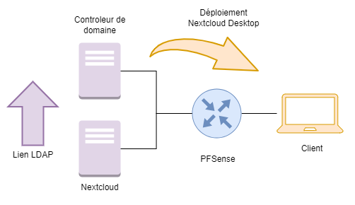
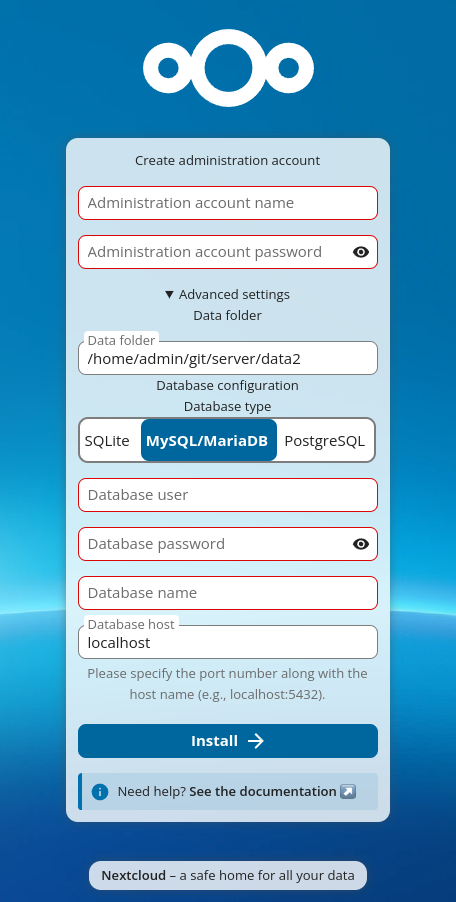
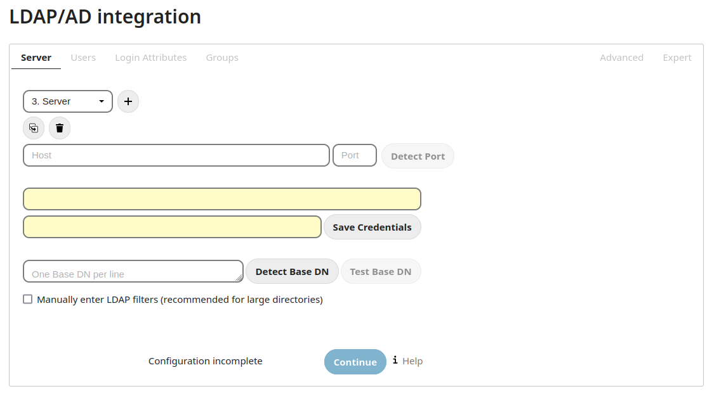
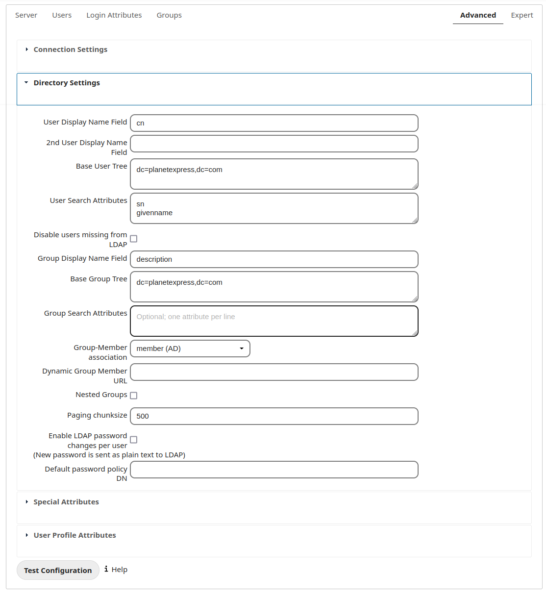
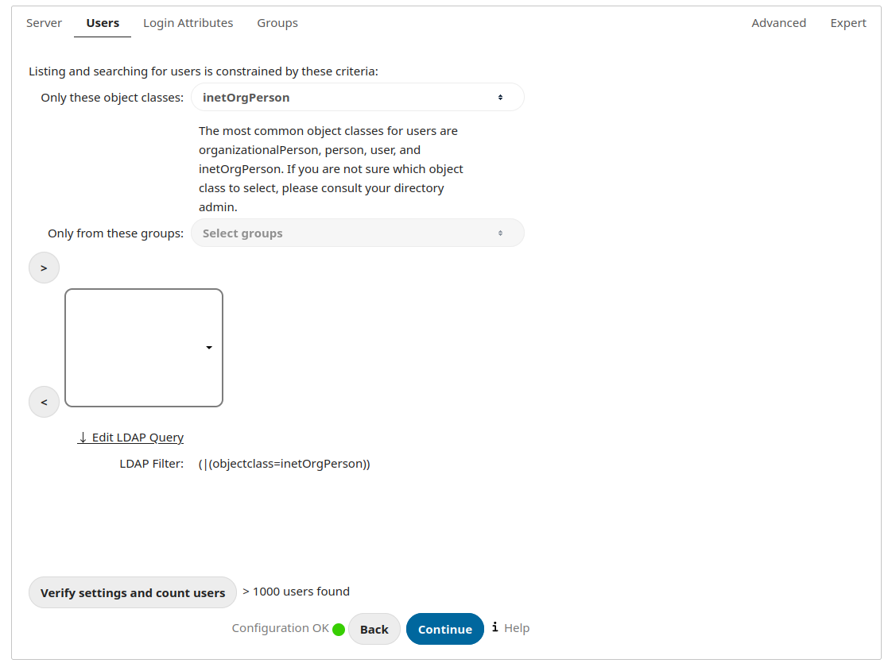
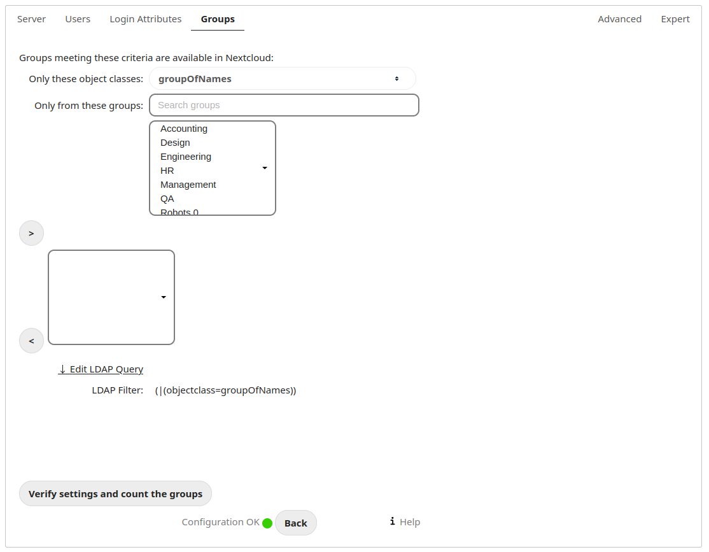
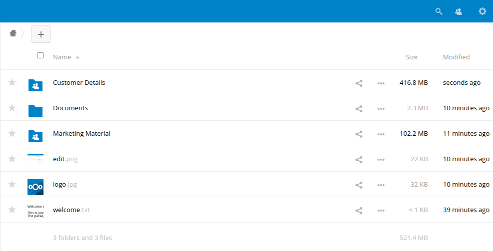
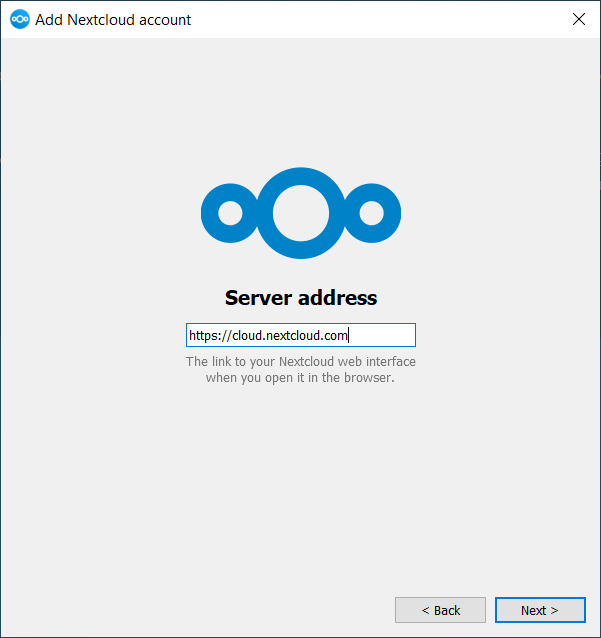
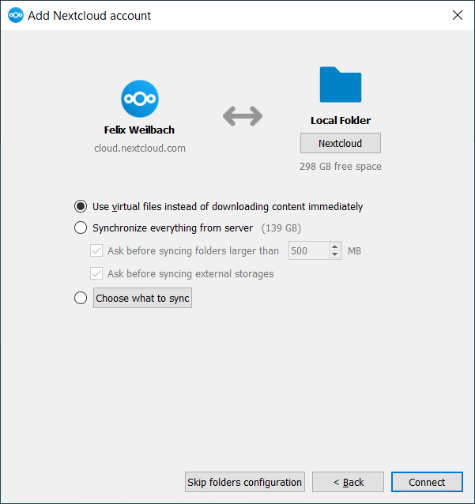

CS-01TP · BTS SIO 2e année · Services
Nextcloud est une solution de cloud privé open source : stockage et partage de fichiers (web, client de bureau, mobile), calendriers, contacts, Talk (chat et visio), édition en ligne. C'est une alternative à OneDrive / Google Drive, et en partie à Microsoft 365, avec des données qui restent sur nos serveurs.
| Brique | Choix du TP |
|---|---|
| Langage | PHP |
| Serveur web | Apache |
| Base de données | MariaDB |
| Stockage | disque local (déplacé ensuite hors de la racine web, § 9) |
| Annuaire | Active Directory, par LDAP puis LDAPS |

| Machine | Rôle | Nom |
|---|---|---|
| SRV-AD | Contrôleur de domaine, DNS, AD CS, partage de déploiement | srv-ad.sio.local |
| SRV-NEXTCLOUD | Debian, Apache, PHP, MariaDB, Collabora | nextcloud.sio.local |
| pfSense | Routage et filtrage entre le réseau serveurs et le réseau clients | |
| Client | Windows 11 dans le domaine |
sudo apt update && sudo apt upgrade -y
sudo apt install -y apache2 mariadb-server libapache2-mod-php php php-common php-curl php-gd \
php-intl php-mbstring php-xml php-mysql php-cli php-zip php-bcmath php-gmp php-apcu wget unzip
cd /tmp
wget https://download.nextcloud.com/server/releases/latest.zip
sudo unzip latest.zip -d /var/www/html/
sudo chown -R www-data:www-data /var/www/html/nextcloudsudo mariadb-secure-installation| Question | Réponse |
|---|---|
| Switch to unix_socket authentication | n |
| Change the root password? | n |
| Remove anonymous users? | Y |
| Disallow root login remotely? | Y |
| Remove test database and access to it? | Y |
| Reload privilege tables now? | Y |
sudo mariadb -u root -p
CREATE DATABASE dbnextcloud CHARACTER SET utf8mb4 COLLATE utf8mb4_general_ci;
GRANT ALL ON dbnextcloud.* TO 'usrnextcloud'@'localhost' IDENTIFIED BY '<mot_de_passe_bdd>';
FLUSH PRIVILEGES;
EXIT;Ouvrir http://<IP_serveur>/nextcloud et renseigner :
| Champ | Valeur |
|---|---|
| Compte administrateur | nom et mot de passe du compte admin local de Nextcloud |
| Type de base | MySQL/MariaDB |
| Utilisateur / mot de passe | usrnextcloud / mot de passe défini plus haut |
| Nom de la base / hôte | dbnextcloud / localhost |

Pour pouvoir utiliser le nom DNS, l'ajouter aux domaines de confiance dans /var/www/html/nextcloud/config/config.php :
'trusted_domains' => array (
0 => '<IP_serveur>',
1 => 'nextcloud.sio.local',
),Préparer dans l'AD un compte de service sans privilège, par exemple SVC_Nextcloud dans OU=Services,
qui sert uniquement à lire l'annuaire. Sur le serveur :
sudo apt install -y php-ldap
sudo systemctl restart apache2Dans Nextcloud : Applications → activer LDAP user and group backend, puis Paramètres d'administration → Intégration LDAP/AD.
| Champ | Valeur |
|---|---|
| Hôte / port | srv-ad.sio.local / 389 (bouton Détecter le port) |
| DN de l'utilisateur | CN=SVC_Nextcloud,OU=Services,DC=sio,DC=local |
| Mot de passe | celui du compte de service → Sauvegarder les informations d'identification |
| DN de base | DC=sio,DC=local (Détecter le DN de base, puis Tester) |

Limiter la recherche aux OU utiles :
DN racine de l'arbre utilisateurs : OU=Utilisateurs,DC=sio,DC=local
DN racine de l'arbre groupes : OU=Groupes,DC=sio,DC=local
Association groupe-membre : member (AD)
member (AD). Capture : documentation Nextcloud.person → Vérifier les paramètres et compter les utilisateurs.sAMAccountName) pour se connecter avec le login Windows.group → Vérifier les paramètres et compter les groupes.
person. Capture : documentation Nextcloud.
group dans l'AD. Capture : documentation Nextcloud.GG_Compta, GG_Direction) et y placer des utilisateurs.
Certificat demandé à l'autorité interne, avec le nom DNS du serveur en SAN :
sudo mkdir -p /etc/ssl/certs/nc /etc/ssl/private/nc
cd /etc/ssl/private/nc
sudo openssl req -new -newkey rsa:2048 -nodes -keyout nc.key -out nc.csr \
-subj "/CN=nextcloud.sio.local" -addext "subjectAltName=DNS:nextcloud.sio.local"Faire signer nc.csr sur https://srv-ad/certsrv (modèle Serveur Web, encodage Base 64),
copier le certificat en /etc/ssl/certs/nc/nc.crt, puis créer /etc/apache2/sites-available/nextcloud.conf :
<VirtualHost *:80>
ServerName nextcloud.sio.local
Redirect permanent / https://nextcloud.sio.local/
</VirtualHost>
<VirtualHost *:443>
ServerName nextcloud.sio.local
DocumentRoot /var/www/html/nextcloud
SSLEngine on
SSLCertificateFile /etc/ssl/certs/nc/nc.crt
SSLCertificateKeyFile /etc/ssl/private/nc/nc.key
<Directory /var/www/html/nextcloud>
AllowOverride All
Require all granted
</Directory>
</VirtualHost>sudo a2enmod ssl rewrite headers
sudo a2ensite nextcloud.conf
sudo apache2ctl configtest && sudo systemctl restart apache2Ajouter dans config.php : 'overwrite.cli.url' => 'https://nextcloud.sio.local',
nextcloud.com/fr/install.
Le déploiement par GPO n'accepte que des MSI.\\srv-ad\Deploiement$\Nextcloud.gpupdate /force puis redémarrage. L'installation se fait au démarrage, avant l'ouverture de session.| Mode | Par ordinateur | Par utilisateur |
|---|---|---|
| Attribué | installé au démarrage | installé à l'ouverture de session |
| Publié | impossible | proposé dans Programmes → Obtenir des programmes |
Première ouverture du client : adresse https://nextcloud.sio.local, connexion avec le compte AD dans le navigateur,
puis choix du dossier local et du mode de synchronisation.


Pour simplifier, Collabora Online (CODE) est installé sur le serveur Nextcloud lui-même, derrière Apache sur le port 444.
cd /usr/share/keyrings
sudo wget https://collaboraoffice.com/downloads/gpg/collaboraonline-release-keyring.gpg
sudo tee /etc/apt/sources.list.d/collaboraonline.sources <<EOF
Types: deb
URIs: https://www.collaboraoffice.com/repos/CollaboraOnline/CODE-ubuntu2204
Suites: ./
Signed-By: /usr/share/keyrings/collaboraonline-release-keyring.gpg
EOF
sudo apt update && sudo apt install -y coolwsd code-brand
sudo coolconfig set ssl.enable false # Apache chiffre à sa place
sudo coolconfig set ssl.termination true
sudo systemctl restart coolwsd
sudo a2enmod proxy proxy_connect proxy_http proxy_wstunnel ssl/etc/apache2/sites-available/collabora.conf : Apache porte le certificat et relaie vers coolwsd (port local 9980).
Listen 444
<VirtualHost *:444>
SSLEngine on
SSLCertificateFile /etc/ssl/certs/nc/nc.crt
SSLCertificateKeyFile /etc/ssl/private/nc/nc.key
AllowEncodedSlashes NoDecode
ProxyPreserveHost On
ProxyPass /browser http://127.0.0.1:9980/browser retry=0
ProxyPassReverse /browser http://127.0.0.1:9980/browser
ProxyPass /hosting/discovery http://127.0.0.1:9980/hosting/discovery retry=0
ProxyPassReverse /hosting/discovery http://127.0.0.1:9980/hosting/discovery
ProxyPass /hosting/capabilities http://127.0.0.1:9980/hosting/capabilities retry=0
ProxyPassReverse /hosting/capabilities http://127.0.0.1:9980/hosting/capabilities
ProxyPassMatch "/cool/(.*)/ws$" ws://127.0.0.1:9980/cool/$1/ws nocanon
ProxyPass /cool/adminws ws://127.0.0.1:9980/cool/adminws
ProxyPass /cool http://127.0.0.1:9980/cool
ProxyPassReverse /cool http://127.0.0.1:9980/cool
</VirtualHost>sudo a2ensite collabora.conf && sudo systemctl restart apache2https://nextcloud.sio.local:444.En LDAP simple (TCP 389), le mot de passe du compte de service et ceux des utilisateurs circulent en clair. LDAPS transporte LDAP dans TLS sur TCP 636. Le contrôleur de domaine présente son certificat ; le serveur Nextcloud doit faire confiance à l'autorité qui l'a signé.
https://srv-ad/certsrv : Télécharger un certificat d'autorité de certification → encodage Base 64..crt (obligatoire) :sudo mkdir -p /usr/local/share/ca-certificates/sio
sudo cp sio-ca.crt /usr/local/share/ca-certificates/sio/
sudo update-ca-certificates
openssl s_client -connect srv-ad.sio.local:636 -brief </dev/null # doit afficher "Verification: OK"ldaps://srv-ad.sio.local, port 636, puis retester la configuration.cd /var/www/html/nextcloud
sudo -u www-data php occ maintenance:mode --on
sudo mkdir -p /var/nextcloud-data
sudo mv /var/www/html/nextcloud/data/* /var/www/html/nextcloud/data/.ocdata /var/nextcloud-data/
# config.php : 'datadirectory' => '/var/nextcloud-data',
sudo chown -R www-data:www-data /var/nextcloud-data
sudo chmod 750 /var/nextcloud-data
sudo -u www-data php occ maintenance:mode --offbind-address = son IP
dans /etc/mysql/mariadb.conf.d/50-server.cnf ; vérifier avec ss -lntp | grep 3306.dbnextcloud et le compte 'usrnextcloud'@'<IP_nextcloud>' avec le même mot de passe.sudo mariadb-dump --single-transaction --default-character-set=utf8mb4 -u root -p dbnextcloud > /tmp/nextcloud-dump.sql
# copie du fichier vers le serveur de BDD, puis sur celui-ci :
sudo mariadb -u root -p dbnextcloud < /tmp/nextcloud-dump.sqlconfig.php : 'dbhost' => '<IP_serveur_bdd>', sortie de maintenance, puis désinstallation de MariaDB sur le serveur Nextcloud.| Test | Résultat attendu |
|---|---|
| Connexion web avec un compte AD | Accès sans création de compte manuelle. |
| Deux comptes de services différents | Chacun ne voit que le dossier d'équipe de son groupe. |
http://nextcloud.sio.local | Redirection en HTTPS, cadenas valide sur un poste du domaine. |
| Poste client après redémarrage | Client installé, dossier synchronisé dans l'explorateur. |
Ouvrir un .docx dans le navigateur | Édition dans Nextcloud Office. |
| Paramètres d'administration → Vue d'ensemble | Pas d'avertissement de sécurité bloquant. |
| Symptôme | Piste |
|---|---|
| « Accès par un domaine non approuvé » | Nom absent de trusted_domains. |
| LDAP : 0 utilisateur trouvé | DN de base ou arbre utilisateurs faux, mauvaise classe d'objet, mot de passe du compte de service expiré. |
| LDAPS ne se connecte pas | Pas de certificat sur le DC, CA non importée ou fichier sans extension .crt, port 636 filtré. |
| Le client n'est pas installé | Package ajouté par chemin local au lieu de l'UNC, droits du partage, GPO pas liée à la bonne OU (gpresult /r). |
| Document Office qui ne s'ouvre pas | Port 444 bloqué par le pfSense, URL Collabora erronée, systemctl status coolwsd. |
Captures : documentation officielle Nextcloud (docs.nextcloud.com, manuels administrateur et utilisateur) et dépôt GitHub nextcloud/groupfolders. Schéma : support de TP BTS SIO. Fiches techniques du cours : LDAPS, déploiement de logiciels par GPO, déplacement d'une BDD.